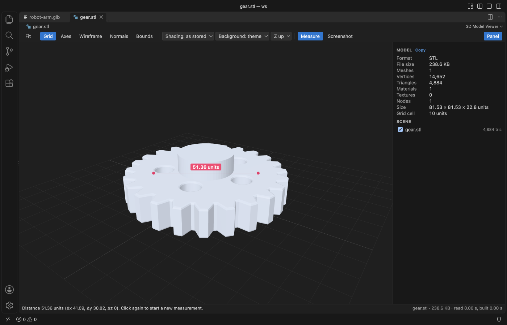

VS Code में STL फ़ाइलें देखें
मुफ़्त 3D Model Viewer इंस्टॉल करें और Explorer में .stl फ़ाइल पर क्लिक करें। orbit के लिए drag करें, pan के लिए right-drag या Shift-drag, zoom के लिए scroll करें, और दो points के बीच की दूरी नापने के लिए M दबाएँ। यही एक्सटेंशन OBJ, PLY, 3MF, GLB और glTF भी खोलता है, और फ़ाइल खोलना, नापना और scene tree मुफ़्त हैं। Zovo Pro (19 USD, एक बार का भुगतान) Print check, Section view और Turntable export जोड़ता है, हर टूल 3 बार मुफ़्त।
मुफ़्त, लाइसेंस MIT। एक्सटेंशन ID zovo.3d-model-viewer, वर्शन 0.2.5।
यह गाइड इन भाषाओं में भी है: English · Français · Italiano · Português (Brasil) · 简体中文 · Čeština · Bahasa Indonesia · 한국어 · Nederlands · Русский · Svenska · ไทย · 繁體中文 · Deutsch · Español · 日本語

VS Code में स्टेप्स
- Marketplace से 3D Model Viewer इंस्टॉल करें, या Ctrl+P (macOS पर Cmd+P) दबाकर
ext install zovo.3d-model-viewerचलाएँ। - Explorer में किसी
.stl,.obj,.ply,.3mf,.glbया.gltfफ़ाइल पर क्लिक करें। अगर कोई दूसरा viewer खुल जाए, तो फ़ाइल पर राइट-क्लिक करके "Open in 3D Model Viewer" चुनें। - orbit के लिए drag करें, pan के लिए right-drag या Shift-drag, और zoom के लिए scroll करें। पूरे model को view में लाने के लिए F दबाएँ।
- पैनल में vertices, triangles, materials, textures और model units में साइज़ देखें। पैनल और scene tree दिखाने या छिपाने के लिए P दबाएँ।
- wireframe के लिए W, vertex normals के लिए N और bounding box के लिए B दबाएँ। STL फ़ाइलों का faceted look हटाने के लिए Shading को Smooth पर सेट करें।
- M (Measure) दबाएँ और surface पर दो points पर क्लिक करें। लाइन पर दूरी दिखती है, और स्टेटस बार में X, Y और Z के हिस्से भी आते हैं। Esc से measure बंद होता है।
- view को PNG फ़ाइल के रूप में सेव करने के लिए Screenshot पर क्लिक करें।
क्या मुफ़्त है और Zovo Pro क्या जोड़ता है
सभी छह फ़ॉर्मैट खोलना, orbit, pan और zoom, stats पैनल, scene tree, Measure, wireframe, normals, bounding box, grid, axes, glTF animations और PNG screenshots मुफ़्त हैं। यह offline चलता है और कोई नेटवर्क कॉल नहीं करता।
Print check model का साइज़, volume और surface area बताता है और जाँचता है कि mesh watertight है या नहीं, यानी open edges, non-manifold edges, उल्टी दिशा वाले faces, zero-area triangles और अलग-अलग parts की गिनती। Mark problems खराब edges को model पर दिखाता है। material, infill, wall thickness, filament diameter और प्रति kg कीमत डालने पर यह slicer खोलने से पहले ही weight, filament की लंबाई और material की लागत का अनुमान देता है।
Print check का इस्तेमाल (Zovo Pro)
- STL फ़ाइल को 3D Model Viewer में खोलें।
- side पैनल में "Run print check" दबाएँ, या Command Palette से "3D Model Viewer: Print Check (Zovo Pro)" चलाएँ। Explorer में फ़ाइल पर राइट-क्लिक करके "Zovo Pro: Print check" भी चुन सकते हैं।
- अगर mesh में दिक्कतें हैं, तो open edges को लाल और बाकी खराब edges को magenta रंग में देखने के लिए "Mark problems" दबाएँ। एक material (PLA, PETG, ABS, ASA, TPU, nylon, PC या resin), infill और अपनी प्रति kg कीमत चुनें।
- रिपोर्ट कॉपी करें, या उसे Markdown या JSON में सेव करें। एक मुफ़्त try एक खुले फ़ाइल टैब के लिए होता है, इसलिए उसी टैब में आप सेटिंग बदलकर इसे दोबारा चला सकते हैं।
Print check आपके कंप्यूटर पर 3 बार मुफ़्त चलता है, उसके बाद लाइसेंस माँगता है। न कोई पॉप-अप आता है, न कोई काउंटडाउन चलता है।
Zovo Pro की कीमत 19 USD है, जो सिर्फ़ एक बार देनी होती है। यह सब्सक्रिप्शन नहीं है, और लाइसेंस सिर्फ़ 3D Model Viewer में नहीं, बल्कि सभी Zovo एक्सटेंशन में Pro टूल चालू करता है। कार्ड (Stripe) से भुगतान के बाद अगले पेज पर आपकी license key दिखती है। VS Code में Command Palette से "Zovo Pro: Enter Zovo Pro license key" चलाएँ और key पेस्ट करें। Key आपके कंप्यूटर पर ही जाँची जाती है, इसके लिए नेटवर्क कनेक्शन नहीं चाहिए। GitHub Sponsors से भुगतान करना हो तो "$19 one time" टियर चुनें, फिर "Zovo Pro: I already paid: unlock with GitHub Sponsors" चलाएँ।
5 लोगों की टीम एक बार 59 USD देती है (कार्ड से)। सभी नियम और सारे Pro टूल Zovo Pro पेज पर हैं (अंग्रेज़ी में)।
Cursor, Windsurf या VSCodium में स्टेप्स
- Ctrl+Shift+X (macOS पर Cmd+Shift+X) से Extensions व्यू खोलें।
zovo.3d-model-viewerखोजें और Install पर क्लिक करें। Cursor, Windsurf और VSCodium एक्सटेंशन Open VSX से इंस्टॉल करते हैं, जहाँ इस एक्सटेंशन का नामzovo/3d-model-viewerहै।- अगर आपके एडिटर में एक्सटेंशन गैलरी नहीं है, तो Open VSX पेज से .vsix फ़ाइल डाउनलोड करें और "Extensions: Install from VSIX..." चलाएँ।
- इसके बाद सब कुछ VS Code की तरह ही काम करता है।
3D Model Viewer क्या करता है
- STL, binary और ASCII, फ़ाइल में हों तो per-face colours के साथ।
- OBJ,
mtllibमें लिखी.mtlफ़ाइल के साथ, जब वह model के बगल में रखी हो। - PLY meshes और point clouds, ASCII और binary, vertex colours के साथ।
- 3MF objects, build items और base material colours।
- GLB और glTF 2.0, embedded या external
.binbuffers और textures, PBR materials, node tree, skins, morph targets और animations के साथ।
यह क्या नहीं करता
- FBX, DAE, USD, STEP, IGES और glTF 1.0 फ़ाइलें नहीं खुलतीं।
- Draco और meshopt से compressed glTF और KTX2 textures अभी decode नहीं होते। एक मैसेज उस extension का नाम बताता है जो मौजूद नहीं है।
- पूरी फ़ाइल memory में पढ़ी जाती है। 1024 MB से बड़ी फ़ाइलों (सेटिंग
modelViewer.maxFileMB) पर एक मैसेज दिखता है और वे पढ़ी नहीं जातीं। - STL, OBJ और PLY में कोई unit नहीं होती, इसलिए साइज़ और दूरियाँ raw coordinates में होती हैं। glTF मीटर में और 3MF मिलीमीटर में होता है, जब तक फ़ाइल में कुछ और न लिखा हो।
- Print check और Section view दिखने वाले meshes पढ़ते हैं, 3 मिलियन triangles तक, और इनके लिए mesh चाहिए, point cloud नहीं। weight एक अनुमान है। supports, brim और ऊपर व नीचे की layers नहीं गिनी जातीं।
अक्सर पूछे जाने वाले सवाल
STL की माप किस unit में होती है?
STL फ़ाइलों में कोई unit नहीं होती, इसलिए viewer raw coordinates दिखाता है। Print check STL, OBJ और PLY को मिलीमीटर मानता है, और अगर आपकी फ़ाइल कोई दूसरी unit इस्तेमाल करती है तो आप उसके पैनल में unit बदल सकते हैं।
क्या यह materials वाली OBJ फ़ाइलें खोल सकता है?
हाँ, जब mtllib में लिखी .mtl फ़ाइल model के बगल में हो। Textures और .bin फ़ाइलें सिर्फ़ model के फ़ोल्डर और खुले workspace फ़ोल्डरों से लोड होती हैं।
क्या यह मुफ़्त है?
हाँ। models खोलना, नापना, stats, scene tree और screenshots मुफ़्त हैं। Print check, Section view और Turntable export Zovo Pro टूल हैं, हर एक 3 बार मुफ़्त, फिर सभी Zovo एक्सटेंशन के लिए एक बार 19 USD।
क्या यह offline चलता है?
हाँ। यह VS Code के अंदर three.js से model बनाता है, इसमें कोई telemetry नहीं है और यह कोई नेटवर्क कॉल नहीं करता। सिर्फ़ एक अपवाद है, जब आप GitHub Sponsors से Zovo Pro चालू करते हैं तब GitHub को एक कॉल जाती है।
और जानकारी
अंग्रेज़ी गाइड में ज़्यादा जानकारी और दूसरे विकल्प हैं। हर फ़ीचर और हर सेटिंग 3D Model Viewer के पेज पर बताई गई है (अंग्रेज़ी में)।
ये तथ्य 13 नवंबर 2026 को Marketplace के मौजूदा वर्शन पर जाँचे गए।